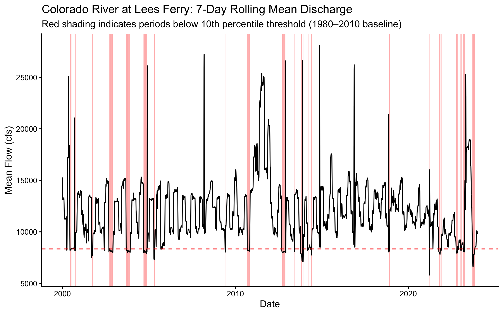
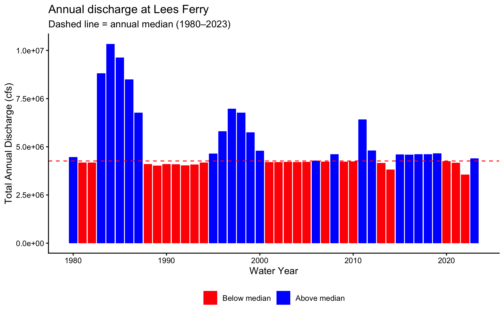
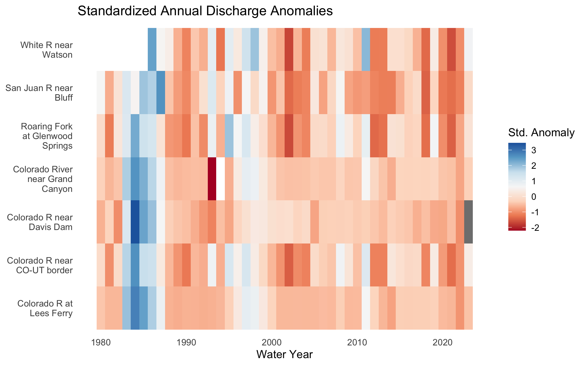
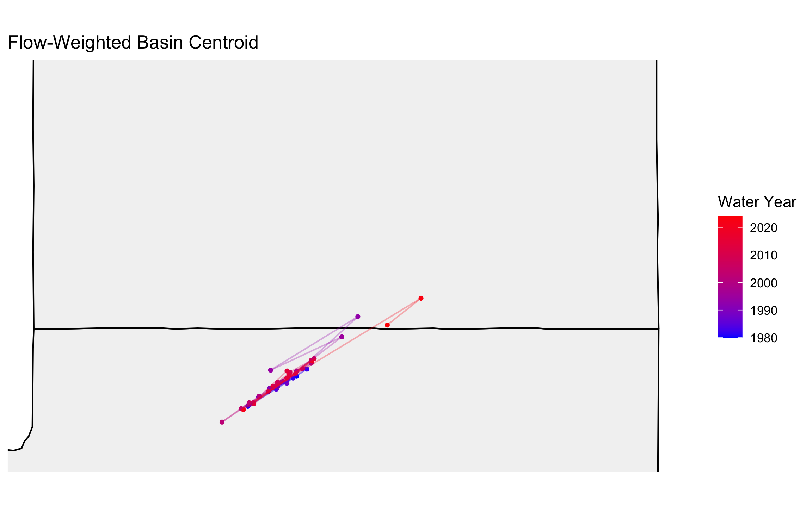
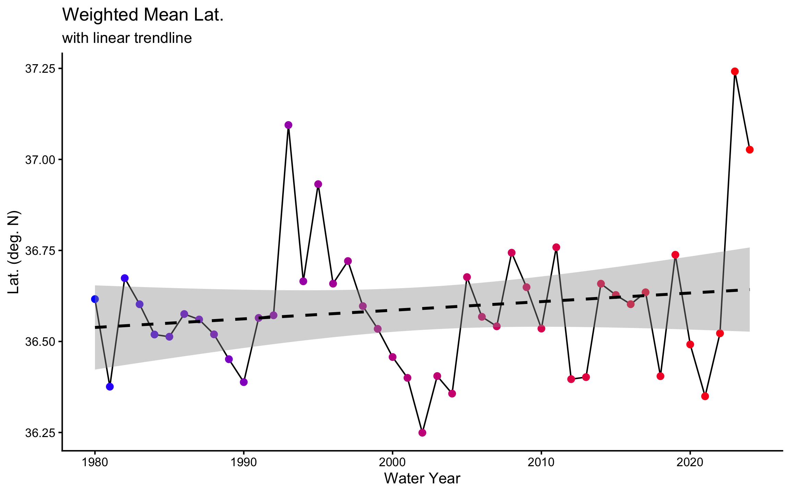
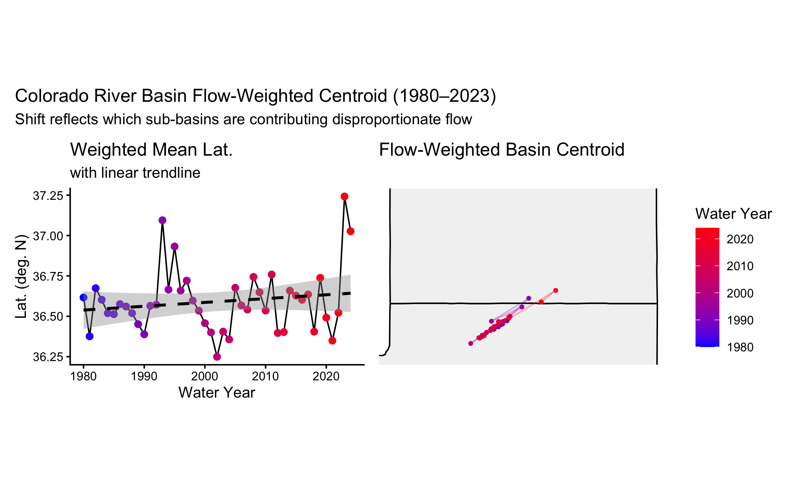
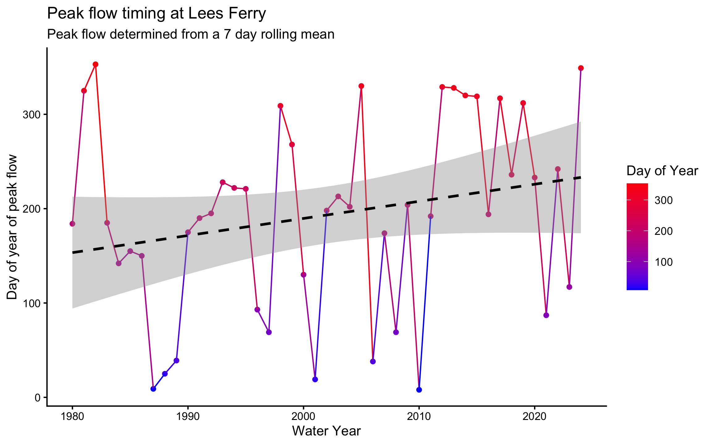
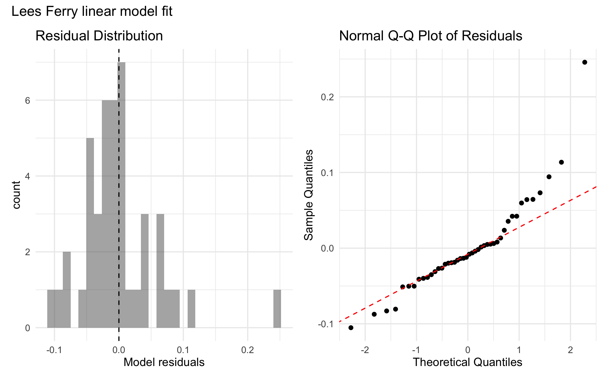

Code
knitr::include_graphics('img/colorado-river.jpg')
Exploring Streamflow Across the Colorado River Basin
knitr::include_graphics('img/colorado-river.jpg')
In January 2023, the federal government announced the first-ever Tier 3 shortage on the Colorado River — triggering mandatory cuts to Arizona, Nevada, and Mexico. Those cuts were calculated from streamflow records like the ones you are about to pull.
The Colorado River Basin supplies drinking water to 40 million people across 7 US states, irrigates 5 million acres of farmland, and is governed by one of the oldest and most contested water rights agreements in American history — the Colorado River Compact of 1922. Understanding how streamflow varies across this system is not an academic exercise. It is the daily work of water managers, federal agencies, tribal water rights holders, and scientists navigating a river under compounding stress from drought, overallocation, and climate change.
In this lab you will work with real streamflow records pulled directly from the USGS National Water Information System (NWIS) — the same federal system water managers query every morning. You will build a complete analytical pipeline: from raw API call to normalized comparisons, threshold detection, basin-wide trend visualization, and a predictive model of the Compact’s key accounting point.
csu-523c on GitHub~/github/ directoryFile → Open Project)---
...
author:
- name: Your Name
email: your@colostate.edu
...
---Install and load the following packages. If any are missing, run install.packages("packagename") first:
if (!requireNamespace("pacman", quietly = TRUE)) install.packages("pacman")
library("pacman")
pacman::p_load(
tidyverse,
dataRetrieval,
zoo,
patchwork,
flextable,
lubridate,
broom,
flextable
)pacman::p_load() installs any missing packages and loads them in one step — convenient for students setting up dependencies.
We will use the dataRetrieval package — developed and maintained by the USGS — to pull 44 years of daily mean discharge from 7 long-record gauges spanning the Colorado River’s main stem and major tributaries.
The USGS parameter code for discharge is 00060 (cubic feet per second). The statistic code 00003 is the daily mean value. Under the hood, dataRetrieval constructs and queries the same REST API URL we explored in lecture:
https://waterservices.usgs.gov/nwis/dv/?sites=09380000¶meterCd=00060&statCd=00003The data can be grabbed below!
gauges <- tribble(
~site_no, ~name, ~state,
"09380000", "Colorado R at Lees Ferry", "AZ",
"09163500", "Colorado R near CO-UT border", "CO",
"09085000", "Roaring Fork at Glenwood Springs","CO",
"09306500", "White R near Watson", "UT",
"09379500", "San Juan R near Bluff", "UT",
"09402500", "Colorado River near Grand Canyon","AZ",
"09423000", "Colorado R near Davis Dam", "NV"
)
raw <- readNWISdv(
siteNumbers = gauges$site_no,
parameterCd = "00060",
startDate = "1980-01-01",
endDate = "2023-12-31"
) %>%
renameNWISColumns() %>% # renames X_00060_00003 Flow
left_join(gauges, by = "site_no") %>%
select(site_no, name, state, Date, Flow)
glimpse(raw)Rows: 109,425
Columns: 5
$ site_no <chr> "09085000", "09085000", "09085000", "09085000", "09085000", "0…
$ name <chr> "Roaring Fork at Glenwood Springs", "Roaring Fork at Glenwood …
$ state <chr> "CO", "CO", "CO", "CO", "CO", "CO", "CO", "CO", "CO", "CO", "C…
$ Date <date> 1980-01-01, 1980-01-02, 1980-01-03, 1980-01-04, 1980-01-05, 1…
$ Flow <dbl> 620, 605, 582, 582, 575, 590, 582, 582, 582, 590, 560, 598, 59…Note: this chunk is cached (cache = TRUE). If you change the data-pull arguments and need fresh data, set cache = FALSE temporarily or delete the _cache/ directory and re-render to force a new download.
glimpse() tell you?
Before doing anything with a new dataset, always check: Does the row count make sense? Are data types correct (Date should be <date>, Flow should be <dbl>)? Are there obvious NAs or impossible values? For ~7 gauges × 44 years × 365 days you should expect roughly 112,000 rows.
You are a water resources analyst. Each morning you deliver a reproducible snapshot of current conditions to Colorado River Compact stakeholders. The analysis must be re-runnable on any date with a single change — that requires building it around parameter objects rather than hardcoded values.
a. Create a my.date parameter object set to the last day of water year 2023 (September 30, 2023). Ensure it is stored as a proper Date object, not a character string.
as.Date() converts a character string to a Date. R stores dates internally as days since 1970-01-01, enabling date arithmetic (my.date - 7 = one week earlier) and use in filter() comparisons. Hint: use as.Date() to convert strings to Date objects and confirm with class() before using date arithmetic or filter().
my.date <- as.Date("2023-09-30")
class(my.date)[1] "Date"b. Compute the day-over-day change in discharge for each gauge — how much flow rose or fell compared to the previous day. Store this as a new column called flow_delta. This tells you whether conditions are improving or deteriorating, which is often more actionable than the raw level alone.
daily_q <- raw %>%
group_by(site_no) %>%
mutate(flow_delta = Flow - dplyr::lag(Flow)) %>%
ungroup()c. Filter to my.date and produce two formatted tables using flextable:
Both tables should have clear column names, rounded numbers, and descriptive captions using flextable (see tip).
flextable
flextable creates publication-quality HTML tables directly from data frames.
Hint: use flextable() with set_header_labels(), set_caption(), and autofit() for clean tables. Use slice_max() to select top n rows and round() to tidy numeric columns before rendering.
max_q_table <- daily_q %>% filter(Date == my.date) %>%
select(site_no, name, Flow) %>%
slice_max(Flow, n = 5) %>%
mutate(Flow = round(Flow)) %>%
flextable() %>%
set_header_labels(
name = "Gauge Name",
Flow = "Daily Mean Flow (cfs)",
site_no = "Gauge Number"
) %>%
set_caption(caption = paste("Top 5 sites with highest flow on", my.date)) %>%
autofit()
max_q_tableGauge Number | Gauge Name | Daily Mean Flow (cfs) |
|---|---|---|
09402500 | Colorado River near Grand Canyon | 6,950 |
09380000 | Colorado R at Lees Ferry | 6,570 |
09163500 | Colorado R near CO-UT border | 3,470 |
09379500 | San Juan R near Bluff | 680 |
09085000 | Roaring Fork at Glenwood Springs | 533 |
max_qdelta_table <- daily_q %>% filter(Date == my.date) %>%
select(site_no, name, flow_delta)%>%
slice_max(flow_delta, n = 5) %>%
mutate(flow_delta = round(flow_delta)) %>%
flextable() %>%
set_header_labels(
name = "Gauge Name",
flow_delta = "Dily Flow Delta (cfs)",
site_no = "Gauge Number"
) %>%
set_caption(caption = paste("Top 5 sites with highest daily flow increase on", my.date)) %>%
autofit()
max_qdelta_tableGauge Number | Gauge Name | Dily Flow Delta (cfs) |
|---|---|---|
09085000 | Roaring Fork at Glenwood Springs | 8 |
09306500 | White R near Watson | -7 |
09380000 | Colorado R at Lees Ferry | -10 |
09402500 | Colorado River near Grand Canyon | -20 |
09163500 | Colorado R near CO-UT border | -50 |
Raw discharge numbers alone don’t tell the full story. Lees Ferry always carries more water than the San Juan at Bluff — but that is largely because it drains over 111,000 square miles versus the San Juan’s ~23,000. To compare these sites meaningfully, we need each gauge’s drainage area. That information lives in a separate table and must be joined in.
This is the core relational data problem: observations in one table, attributes in another, connected through a shared key. It is also one of the most error-prone operations in data science — not because the syntax is hard, but because bad joins fail silently.
Before writing a single _join() call, answer three questions:
| Function | Keeps rows from… | Non-matching rows |
|---|---|---|
left_join(x, y) |
All of x |
y columns filled with NA |
right_join(x, y) |
All of y |
x columns filled with NA |
inner_join(x, y) |
Only rows matching in both | Dropped entirely |
full_join(x, y) |
Both x and y |
NAs on whichever side has no match |
The most common mistake: using inner_join when you meant left_join. An inner join silently drops every row from x that has no match in y — your dataset shrinks and you may not notice until downstream results are wrong.
The second most common mistake: joining on a key that is not unique in one of the tables. If site_no appears twice in site_meta, every matching row in your flow data will be duplicated — your dataset grows and you may not notice.
Both failures are invisible without explicit verification. For graduate-level work, in your write-up briefly justify the join type you chose, quantify any unmatched keys or duplicates you observed, and discuss possible data provenance reasons for mismatches.
a. Pull site metadata for all 7 gauges. Before joining, verify that site_no is actually unique in site_meta — a duplicated key will silently inflate your row count.
site_meta <- readNWISsite(gauges$site_no) |>
select(
site_no,
drain_area_va, # drainage area in square miles
huc_cd, # 8-digit HUC watershed code
dec_lat_va, # latitude
dec_long_va # longitude
)
# Is site_no actually unique? If any row shows n > 1, the join will duplicate rows
site_meta |> count(site_no) |> filter(n > 1)[1] site_no n
<0 rows> (or 0-length row.names)A primary key uniquely identifies each row in its own table. site_no in site_meta is a primary key — exactly one row per gauge.
A foreign key appears in another table to link observations back. site_no in your flow data is a foreign key — it appears thousands of times (once per day per gauge) and connects each observation to its gauge’s metadata.
The join matches on this shared key. Because one gauge has many flow records, this is a one-to-many relationship — one site_meta row fans out to match thousands of flow rows.
b. Join site_meta to your flow data using site_no as the key. Use the join type that keeps all flow records regardless of whether metadata is available.
df <- daily_q %>%
left_join(site_meta, by = "site_no")
# Verify join
glimpse(df)Rows: 109,425
Columns: 10
$ site_no <chr> "09085000", "09085000", "09085000", "09085000", "0908500…
$ name <chr> "Roaring Fork at Glenwood Springs", "Roaring Fork at Gle…
$ state <chr> "CO", "CO", "CO", "CO", "CO", "CO", "CO", "CO", "CO", "C…
$ Date <date> 1980-01-01, 1980-01-02, 1980-01-03, 1980-01-04, 1980-01…
$ Flow <dbl> 620, 605, 582, 582, 575, 590, 582, 582, 582, 590, 560, 5…
$ flow_delta <dbl> NA, -15, -23, 0, -7, 15, -8, 0, 0, 8, -30, 38, 0, 22, 15…
$ drain_area_va <dbl> 1453, 1453, 1453, 1453, 1453, 1453, 1453, 1453, 1453, 14…
$ huc_cd <chr> "140100041003", "140100041003", "140100041003", "1401000…
$ dec_lat_va <dbl> 39.54667, 39.54667, 39.54667, 39.54667, 39.54667, 39.546…
$ dec_long_va <dbl> -107.3308, -107.3308, -107.3308, -107.3308, -107.3308, -…nrow(df) == nrow(daily_q)[1] TRUEsum(is.na(df$drain_area_va)) == 0[1] TRUE# delta should be 10 cfs
df %>%
filter(Date == my.date, site_no == "09085100")# A tibble: 0 × 10
# ℹ 10 variables: site_no <chr>, name <chr>, state <chr>, Date <date>,
# Flow <dbl>, flow_delta <dbl>, drain_area_va <dbl>, huc_cd <chr>,
# dec_lat_va <dbl>, dec_long_va <dbl>Justification: I used a left join to maintain all gauge records regardless of if they had metadata and joined by site_no. Verification revealed no unexpected changes in data frame dimensions or loss of values.
c. Verify the join — this step is not optional:
nrow(result) == nrow(left_table) — row count unchanged ✓sum(is.na(new_column)) == 0 — no unexpected NAs ✓These checks cost 30 seconds and catch errors that would otherwise corrupt every downstream calculation silently. You will join data in every lab this semester. Consider, building this habit now.
This course is at the graduate level. In addition to producing correct code and outputs, your submission should:
Lees Ferry’s high discharge reflects its enormous watershed, not necessarily more intense rainfall or runoff. To compare runoff intensity across sites with different drainage areas, we normalize by expressing flow per unit area: cfs per square mile.
a. Add a flow_per_sqmi column to your data.frame.
df <- df %>%
mutate(flow_per_sqmi = Flow/drain_area_va)b. On my.date, build a flextable showing both raw and normalized rankings side by side for all 7 gauges. Include columns for gauge name, raw discharge (cfs), drainage area (mi²), normalized flow (cfs/mi²), raw rank, and normalized rank. Sort by raw rank.
df %>%
filter(Date == my.date) %>%
select(name, Flow, flow_per_sqmi, drain_area_va) %>%
mutate(raw_rank = rank(-Flow),
norm_rank = rank(-flow_per_sqmi),
flow_per_sqmi = round(flow_per_sqmi, digits = 4)) %>%
arrange(raw_rank) %>%
flextable() %>%
set_header_labels(
name = "Gauge Name",
Flow = "Raw Discharge (cfs)",
drain_area_va = "Drainage area (mi^2)",
flow_per_sqmi = "Normalized Flow (cfs/mi^2)",
raw_rank = "Raw Rank",
norm_rank = "Normalized Rank"
) %>%
set_caption(caption = paste("Area normalized discharge on", my.date)) %>%
autofit()Gauge Name | Raw Discharge (cfs) | Normalized Flow (cfs/mi^2) | Drainage area (mi^2) | Raw Rank | Normalized Rank |
|---|---|---|---|---|---|
Colorado River near Grand Canyon | 6,950 | 0.0491 | 141,600 | 1 | 5 |
Colorado R at Lees Ferry | 6,570 | 0.0588 | 111,800 | 2 | 4 |
Colorado R near CO-UT border | 3,470 | 0.1944 | 17,849 | 3 | 2 |
San Juan R near Bluff | 680 | 0.0296 | 23,000 | 4 | 6 |
Roaring Fork at Glenwood Springs | 533 | 0.3668 | 1,453 | 5 | 1 |
White R near Watson | 329 | 0.0818 | 4,020 | 6 | 3 |
Colorado R near Davis Dam | 173,300 | 7 | 7 |
c. Answer in 2–3 sentences: (1) do the raw and normalized rankings differ, and if so, which gauge changes most dramatically? (2) Why does per-area normalization matter for comparing gauges in the Colorado Basin? (3) Name one analysis where you would use raw discharge and one where you would use normalized discharge.
The ranks differ because some of the gauges in this analysis are downstream of others and have much larger drainage area, so more discharge is expected on these lower, higher order sites. The Roaring Fork River has the largest rank change between raw flow and normalized flow, which is because it is a mountainous headwater of the system that receives higher precipitation per unit area. Raw discharge is suitable for analyzing interstate government compliance, like CRC obligations at Lees Ferry, while normalized discharge is useful for analysis comparing sub basins with different areas.
Drought managers don’t just watch absolute flow levels — they watch how current conditions compare to historical norms. The standard operational metric is the 7Q10: the lowest 7-day average flow expected to occur once in 10 years. We’ll use a related approach: flag when the 7-day rolling mean falls below the historical 10th percentile.
The USGS computes official low-flow statistics — including the 7Q10 — and makes them accessible via dataRetrieval::readNWISstat(). The thresholds you compute here will closely approximate those official values and follow the same logic water rights lawyers and regulators actually use.
a. For each gauge, compute the 7-day rolling mean of daily discharge. Use zoo::rollmean() with fill = NA and align = "right" so each value represents the average of the current and 6 preceding days. If you havent see this function before, check out the documentation (?rollmean) and examples to understand how it works.
df <- df %>%
group_by(site_no) %>%
mutate(rollmean_7day = rollmean(x = Flow, k = 7, fill = NA, align = "right")) %>%
ungroup()b. Define a low-flow threshold for each gauge as the 10th percentile of its historical discharge during 1980–2010. A flow that is critically low for Lees Ferry might be above average for the Little Colorado — thresholds must be site-specific.
q_threshold <- df %>%
filter(year(Date) >= 1980 & year(Date) <= 2010) %>% #threshold date range
group_by(site_no) %>%
summarise(q10 = quantile(Flow, probs = 0.10, na.rm = TRUE))
df <- df %>%
left_join(q_threshold, by = "site_no")
# No unexpected df growth, 12 to 13 columns
sum(is.na(df$q10)) == 0[1] TRUE# delta should be 8 cfs
df %>%
filter(Date == my.date, site_no == "09085000")# A tibble: 1 × 13
site_no name state Date Flow flow_delta drain_area_va huc_cd
<chr> <chr> <chr> <date> <dbl> <dbl> <dbl> <chr>
1 09085000 Roaring Fork … CO 2023-09-30 533 8 1453 14010…
# ℹ 5 more variables: dec_lat_va <dbl>, dec_long_va <dbl>, flow_per_sqmi <dbl>,
# rollmean_7day <dbl>, q10 <dbl>c. Add a logical column below_threshold that is TRUE when the 7-day rolling mean is below the gauge’s 10th percentile threshold.
df <- df %>%
mutate(below_threshold = if_else(rollmean_7day <= q10, TRUE, FALSE))
df %>%
count(below_threshold)# A tibble: 3 × 2
below_threshold n
<lgl> <int>
1 FALSE 97880
2 TRUE 11229
3 NA 316d. For Lees Ferry (site 09380000) — the Compact’s primary accounting point — plot the 7-day rolling mean from 2000–2023 using ggplot. Shade periods below threshold in red and add a dashed horizontal reference line at the threshold.
# get threshold value for Lees Ferry
lees_threshold <- q_threshold %>%
filter(site_no == "09380000") %>%
pull(q10) %>%
unname()
# create below perdiod for visualizaiton
below_periods <- df %>%
filter(site_no == "09380000",
below_threshold == TRUE,
year(Date) >= 2000 & year(Date) <= 2023)
df %>%
filter(site_no == "09380000",
year(Date) >= 2000 & year(Date) <= 2023) %>%
ggplot(aes(x = Date, y = rollmean_7day)) +
geom_rect(data = below_periods,
aes(xmin = Date, xmax = Date + 1, ymin = -Inf, ymax = Inf),
fill = "red", alpha = 0.2, inherit.aes = FALSE) +
geom_line()+
geom_hline(yintercept = lees_threshold, color = "red", linetype = "dashed")+
labs(
y = "Mean Flow (cfs)",
title = "Colorado River at Lees Ferry: 7-Day Rolling Mean Discharge",
subtitle = "Red shading indicates periods below 10th percentile threshold (1980–2010 baseline)",
)+
theme_classic()
e. How many days per year, on average, did Lees Ferry fall below its low-flow threshold in 2000–2010 vs. 2011–2023? Produce a small summary table and answer in 2–3 sentences: (1) did below-threshold days increase or decrease? (2) Is this a shift in isolated dry years or a persistent baseline change? (3) What does this imply for Compact delivery obligations?
The number of days below the threshold decreased from 36.6 to 27.5 in the 2011-2023 period. The change looks to be mainly due to the severe drought surrounding between 2000-2005, which had high consistent days below the threshold. While the later period didn’t have a drought that continuous, 2023 was the year with the most days below the threshold from 2000-2023, indicating that the severity of shortages may be increasing. These data suggest that the upper basin is struggling to meet CRC requirements during drought years, if a shortage with the severity of 2023 and the consistency of the ~2002 drought occurs, the upper basin will likely be badly out of compliance with the CRC.
n_distinct(year(Date)) counts unique years in a group — useful for computing per-year averages across a multi-year period.
thresh_comp <- df %>%
filter(year(Date) >= 2000 & year(Date) <= 2023,
site_no == "09380000") %>%
mutate(period = if_else(year(Date) <= 2010, "2000_2010", "2011_2023"),
year = year(Date)) %>%
group_by(period, year) %>%
summarise(days_below = sum(below_threshold, na.rm = TRUE)) %>%
ungroup() %>%
group_by(period) %>%
summarise(avg_days_below = round(mean(days_below), 1),
n_years = n_distinct(year))
flextable(thresh_comp) %>%
set_header_labels(
period = "Period",
avg_days_below = "Days",
n_years = "Years in period"
) %>%
set_caption(caption = "Avg. annual days below Q10 threshold") %>%
autofit()Period | Days | Years in period |
|---|---|---|
2000_2010 | 36.6 | 11 |
2011_2023 | 27.5 | 13 |
…
Calendar years are a poor fit for western US hydrology. The water year (October 1 – September 30) captures the full snowmelt cycle: snowpack accumulates through winter, melts in spring, and by September the basin has recharged or drawn down for the year. Water year 2023 = October 1, 2022 through September 30, 2023.
a. Add water_year and month columns to your dataset. The water year is the calendar year of the ending September 30 — months October through December belong to the next water year.
Use if_else() to set water_year for Oct–Dec months.
b. For each gauge and water year, compute: total annual discharge, peak daily discharge, and number of days below the low-flow threshold.
df <- df %>%
mutate(water_year = calcWaterYear(Date)) #used the dataRetrival function
# print(df %>%
# group_by(site_no, name, water_year) %>%
# summarise(sum_na = sum(is.na(Flow))), n = 400)
year_df <- df %>%
group_by(site_no, name, water_year) %>%
summarise(
annual_q = sum(Flow),
peak_q = max(Flow),
days_below_threshhold = sum(below_threshold, na.rm = TRUE)
) %>%
ungroup()
glimpse(year_df)Rows: 308
Columns: 6
$ site_no <chr> "09085000", "09085000", "09085000", "09085000", …
$ name <chr> "Roaring Fork at Glenwood Springs", "Roaring For…
$ water_year <dbl> 1980, 1981, 1982, 1983, 1984, 1985, 1986, 1987, …
$ annual_q <dbl> 432890, 271835, 469712, 603893, 765741, 644976, …
$ peak_q <dbl> 7170, 4110, 5500, 11200, 9510, 9690, 7020, 5720,…
$ days_below_threshhold <int> 0, 103, 0, 11, 0, 0, 0, 0, 2, 47, 155, 50, 84, 5…c. Plot total annual discharge at Lees Ferry by water year (1980–2023) as a bar chart. Color bars above the long-term median blue and bars below it red. Add a dashed horizontal reference line at the median.
Hint: compute the long-term median and color bars by whether each year’s total is above or below it; add a dashed horizontal line at the median for reference.
# compute long term median
lees_median <- year_df %>%
filter(site_no == "09380000",
water_year >= 1980 & water_year <= 2023) %>%
pull(annual_q) %>%
median(na.rm = TRUE) #Removing NAs just in case, but Lees data should be complete for this period
year_df %>%
filter(site_no == "09380000",
water_year >= 1980 & water_year <= 2023) %>%
ggplot(aes(x = water_year, y = annual_q, fill = annual_q >= lees_median))+ #creat a logical vector to map colors onto
geom_col()+
geom_hline(yintercept = lees_median,
color = "red", linetype = "dashed")+
scale_fill_manual(values = c("TRUE" = "blue", "FALSE" = "red"),
labels = c("TRUE" = "Above median", "FALSE" = "Below median"),
name = NULL)+
labs(
title = "Annual discharge at Lees Ferry",
subtitle = "Dashed line = annual median (1980–2023)",
x = "Water Year",
y = "Total Annual Discharge (cfs)"
) +
theme_classic()+
theme(legend.position = "bottom") 
# need to write out In 2–3 sentences: (1) describe the direction and approximate timing of any structural shift in the record, (2) identify one year that stands out as an exception to the dominant pattern and what you know about its cause, and (3) explain what this pattern means for Compact water accounting.
The records suggests that periods of high runoff may be decreasing over time. The graph shows several anomalous peaks in the 80s and late 90s, in particular the peak around 1983-84 is related to a massive snow year and the near total failure of Glen Canyon Dam which caused high flows at Lees Ferry. This trend is troubling, as historically high flow periods allowed Lake Powell to recharge and bank water for CRC compliance in low years; less high flow years will contribute to the depleation of reservoir levels as well as impact the 10 year 7.5 million AF average used for compact accounting.
…
A single gauge tells you about one location. To understand whether drought is consistent across the entire basin — or whether some tributaries are diverging from the main stem — you need to compare all gauges simultaneously on the same scale.
Raw discharge can’t serve this purpose: a large-watershed gauge will always dominate. The solution is a standardized anomaly — each year’s flow expressed as standard deviations above or below the site’s own baseline mean:
\[\text{anomaly} = \frac{\bar{Q}_{year} - \bar{Q}_{baseline}}{\sigma_{baseline}}\]
where baseline = 1980–2010. An anomaly of –2 means “two standard deviations below normal for this gauge” — directly comparable to the same metric at any other gauge.
a. Compute the 1980–2010 baseline mean and SD per gauge. Join those stats back to the full annual data and compute the standardized anomaly for every gauge-year combination.
Hint: summarize baseline mean and SD per gauge (1980–2010), join those stats to the annual table, and compute the standardized anomaly as (total_flow − baseline_mean)/baseline_sd. This is a join you’ve seen twice now — verify row counts and NAs after the join.
baseline <- year_df %>%
filter(water_year >= 1980 & water_year <= 2010) %>%
group_by(site_no) %>%
summarise(
baseline_sd = sd(annual_q),
baseline_mean = mean(annual_q)
)
glimpse(baseline)Rows: 7
Columns: 3
$ site_no <chr> "09085000", "09163500", "09306500", "09379500", "0938000…
$ baseline_sd <dbl> 142955.68, 995806.51, 79407.67, 348861.83, 1818255.53, 1…
$ baseline_mean <dbl> 442662.4, 2350170.0, 244230.1, 744205.5, 5255319.7, 5339…# left joing to maintain all yearly flow data
annual <- year_df %>%
left_join(baseline, by = "site_no")
# no unexpected NAs
sum(is.na(annual$baseline_sd)) == 0 [1] TRUEsum(is.na(annual$baseline_mean)) == 0[1] TRUE# no unexpected growth
nrow(annual) == nrow(year_df)[1] TRUEannual <- annual %>%
mutate(std_anomaly = (annual_q - baseline_mean) / baseline_sd)b. Visualize as a heatmap: water year on x, gauge name on y, fill = standardized anomaly. Use a diverging color scale centered at zero (blue = above average, red = below average).
geom_tile() draws one rectangle per gauge-year. For the color scale, use a diverging color scale centered at zero (e.g., RdBu), clamp extreme values with oob = scales::squish, and wrap long gauge names to keep labels readable.
annual %>%
filter(water_year != 2024) %>% #2024 not a complete water year
ggplot(aes(x = water_year, y = str_wrap(factor(name), width = 15), fill = std_anomaly)) +
geom_tile() +
scale_fill_distiller(
palette = "RdBu",
direction = 1,
oob = scales::squish,
) +
labs(
title = "Standardized Annual Discharge Anomalies",
x = "Water Year",
y = NULL,
fill = "Std. Anomaly"
) +
theme_minimal() +
theme(
panel.grid = element_blank()
)
c. In 3–4 sentences: (1) describe whether the post-2000 drought signal appears across all gauges or only some, (2) identify two specific years that appear as basin-wide anomalies — one dry, one wet — and name the climate event that caused each, and (3) explain what simultaneous basin-wide anomalies tell you that a single-gauge record cannot.
The post 2000 drought signal is largely absent for all gauges below Lake Powell, which makes sense as the reservoir used banked water to continue lower basin deliveries. The wet years around 1983 are evident across the basin caused by the abnormally large snow year in the winter of 82-83 and. In the Post 2020 drought, we see the drought signal more evenly across the basin because there was not an antecedent wet period allowing high reservoir levels like in the post 2000 drought that could mitigate lower basin shortages. Basin-wide anomalies allow a better picture of the entire basin’s response to shortages, and show how hydrologic conditions have varied impacts geographically.
…
You have been asked to understand how the geographic center of streamflow has shifted over time. If drought has disproportionately reduced flow in the southern tributaries, the flow-weighted center of the basin should drift north — proportionally more flow is coming from northern headwater gauges. In exceptional snowmelt years it should shift back.
We measure this with the flow-weighted mean position: each gauge’s coordinates are weighted by its fraction of total annual basin flow.
\[\bar{X}_{year} = \frac{\sum (lon_i \times Q_i)}{\sum Q_i} \qquad \bar{Y}_{year} = \frac{\sum (lat_i \times Q_i)}{\sum Q_i}\]
a. Join gauge coordinates (dec_lat_va, dec_long_va) from site_meta to your annual summary. Compute the flow-weighted mean latitude and longitude for each water year.
Hint: join coordinates from site_meta to the annual table, then compute weighted longitude/latitude per year as sum(coord * total_flow) / sum(total_flow). This is your third join — verify row counts, NAs, and spot-check known values.
Note: mapping can use map_data("state"); if map_data() is not available install the maps package (install.packages("maps")) or use ggplot2::map_data("state") which provides equivalent polygons.
site_meta_loc <- site_meta %>%
select(site_no, dec_lat_va, dec_long_va)
annual_loc <- annual %>%
left_join(site_meta_loc, by = "site_no")
# check left join outputs
nrow(annual_loc) == nrow(annual)[1] TRUEsum(is.na(annual_loc$dec_lat_va)) == 0 [1] TRUEsum(is.na(annual_loc$dec_long_va)) == 0 [1] TRUE# days below threshold should be 72
annual_loc %>%
filter(site_no == "09402000",
water_year == "1993")# A tibble: 0 × 11
# ℹ 11 variables: site_no <chr>, name <chr>, water_year <dbl>, annual_q <dbl>,
# peak_q <dbl>, days_below_threshhold <int>, baseline_sd <dbl>,
# baseline_mean <dbl>, std_anomaly <dbl>, dec_lat_va <dbl>, dec_long_va <dbl># compute weighted annual means
annual_loc <- annual_loc %>%
group_by(water_year) %>%
mutate(weighted_long = sum(dec_long_va * annual_q, na.rm = TRUE) /
sum(annual_q, na.rm = TRUE),
weighted_lat = sum(dec_lat_va * annual_q, na.rm = TRUE) /
sum(annual_q, na.rm = TRUE)) %>%
ungroup()b. Create a two-panel figure using patchwork:
Hint: draw a western-US polygon basemap and overlay the annual weighted centers as a colored path and points; beside it, plot weighted latitude over time with a linear trend. Use a diverging color gradient for year progression and patchwork to combine panels.
If you haven’t seen patchwork before, it allows you to combine multiple ggplots into a single figure with simple syntax: plot1 + plot2 places them side by side; plot1 / plot2 stacks them vertically assuming the package is loaded.
pacman::p_load(patchwork, maps)
centroids <- annual_loc %>%
distinct(weighted_long, weighted_lat, water_year)
western_states <- map_data("state") %>%
filter(region %in% c("arizona", "utah")) #, "colorado", "nevada",
# "new mexico", "california", "wyoming", "idaho"))
map <- ggplot() +
geom_polygon(data = western_states,
aes(x = long, y = lat, group = group),
fill = "grey95", color = "black") +
geom_point(data = centroids,
aes(x = weighted_long, y = weighted_lat, color = water_year),
size = 1, ) +
geom_path(data = centroids,
aes(x = weighted_long, y = weighted_lat, color = water_year),
linewidth = 0.5, alpha = .3) +
scale_color_gradient(low = "blue", high = "red", name = "Water Year") +
coord_sf(xlim = c(-114, -109), ylim = c(36, 39))+
# coord_fixed()+
labs(title = "Flow-Weighted Basin Centroid",
x = NULL, y = NULL) +
theme_minimal() +
theme(panel.grid = element_blank(),
axis.text = element_blank())
map
lat <- centroids %>%
ggplot(aes(x = water_year, y = weighted_lat)) +
geom_line() +
geom_point(aes(color = water_year), size = 2) +
geom_smooth(method = "lm", color = "black", linetype = "dashed") +
scale_color_gradient(low = "blue", high = "red", guide = "none") +
labs(title = "Weighted Mean Lat.",
subtitle = "with linear trendline",
x = "Water Year",
y = "Lat. (deg. N)") +
theme_classic()
lat
lat + map +
plot_annotation(
title = "Colorado River Basin Flow-Weighted Centroid (1980–2023)",
subtitle = "Shift reflects which sub-basins are contributing disproportionate flow"
)
c. Your latitude time series should show two years where the weighted center spikes dramatically northward. Identify those two years and explain: (1) what climate event caused each spike, (2) what they have in common physically, and (3) what the long-term upward trend in weighted latitude suggests about which part of the basin is becoming proportionally more important to total flow — and why that matters for water managers downstream.
…
The two years with a northward spike were 1994 and 2023. In both of these years, the headwaters had strong snow years relative to precipitation in the lower basin. El Nino events for both years helped fuel the higher headwaters snow pack for the Colorado Basin. Trends northward in weighted flow indicate that headwaters states are becoming critical regional water supply areas and means that downstream managers have a vested interest in how upper basin states manage their waters.
Annual totals mask important seasonal structure. The Colorado Basin has two distinct runoff pulses: a snowmelt surge in spring (April–June) driven by Rocky Mountain headwater snowpack, and a monsoon pulse in late summer (July–September) driven by convective storms across the Arizona-New Mexico plateau. These seasons respond differently to climate forcing — and under warming, the snowmelt season is arriving earlier.
a. Add a season column using case_when(). Roughly we will define the seasons as follows:
Make season a factor with levels in hydrological order: Snowmelt, Monsoon, Low-flow, Winter.
Hint: extract month from Date with lubridate::month(), create season with case_when() mapping month ranges to labels, then convert to a factor with explicit level ordering:
data |> mutate(
month = month(Date),
season = case_when(...),
season = factor(season, levels = c('Snowmelt', 'Monsoon', 'Low-flow', 'Winter'))
)df <- df %>%
mutate(
month = month(Date),
season = case_when(
month >= 4 & month <= 6 ~ 'Snowmelt',
month >= 7 & month <= 9 ~ 'Monsoon',
month >= 10 & month <= 12 ~ 'Low-flow',
month >= 1 & month <= 3 ~ 'Winter'
),
season = factor(season, levels = c(c('Snowmelt', 'Monsoon', 'Low-flow', 'Winter')))
) b. Group by gauge, water year, and season. Summarize total seasonal discharge and normalized runoff per group.
seasonal_df <- df %>%
group_by(site_no, water_year, season) %>%
summarise(
seasonal_q = sum(Flow, na.rm = TRUE),
norm_seasonal_q = sum(flow_per_sqmi, na.rm = TRUE)
)c. For each gauge and water year, identify the date of peak 7-day mean flow and convert it to day-of-year. Plot peak day-of-year vs. water year for Lees Ferry with a linear trend line.
slice_max(roll7, n = 1, with_ties = FALSE) inside a group_by(site_no, water_year) block selects the single highest 7-day mean row per gauge per year. Then lubridate::yday(Date) converts to day-of-year (1–365).
lees_code = "09380000"
df %>%
group_by(site_no, water_year) %>%
slice_max(rollmean_7day, n = 1, with_ties = FALSE) %>%
mutate(yday = lubridate::yday(Date)) %>%
filter(site_no == lees_code) %>%
ggplot(aes(x = water_year, y = yday, color = yday))+
geom_point()+
geom_line()+
geom_smooth(method = "lm", linetype = "dashed", color = "black")+
labs(
x = "Water Year",
y = "Day of year of peak flow",
title = "Peak flow timing at Lees Ferry",
subtitle = "Peak flow determined from a 7 day rolling mean",
color = "Day of Year"
)+
scale_color_gradient(low = "blue", high = "red")+
theme_classic()
df_timing <- df %>%
group_by(site_no, water_year) %>%
slice_max(rollmean_7day, n = 1, with_ties = FALSE) %>%
mutate(yday = lubridate::yday(Date)) %>%
filter(site_no == lees_code)
mod_timing <- lm(yday ~ water_year, data = df_timing)
summary(mod_timing)
Call:
lm(formula = yday ~ water_year, data = df_timing)
Residuals:
Min 1Q Median 3Q Max
-199.763 -59.643 7.118 80.169 195.973
Coefficients:
Estimate Std. Error t value Pr(>|t|)
(Intercept) -3434.336 2299.803 -1.493 0.143
water_year 1.812 1.149 1.577 0.122
Residual standard error: 100.1 on 43 degrees of freedom
Multiple R-squared: 0.0547, Adjusted R-squared: 0.03272
F-statistic: 2.488 on 1 and 43 DF, p-value: 0.122d. In 2–3 sentences: (1) describe the direction and magnitude of the peak timing trend, (2) is it statistically visible or buried in noise? (3) What would a two-week earlier peak timing mean operationally for reservoir managers trying to capture spring runoff before it passes downstream?
The general trend shows that peak runoff is becoming later in the year at Lees Ferry, however, there is no statistically significant relationship with these data (linear model p-value = 0.122) which is likely due to the gauge being below Powell and having varied and unnatural releases hiding a true signal in noise. An earlier timing would mean that managers would need to have reservoir levels lowered earlier to be ready to capture spring runoff (only if the reservoir actually operates close to capacity).
…
Lees Ferry is the Compact’s accounting point — the location where upper basin states must deliver flow to lower basin states. Predicting annual discharge at Lees Ferry from upstream conditions has direct operational value: managers can begin planning deliveries months before the water arrives.
We’ll build a simple but physically grounded model: can Glenwood Springs (an upper Rocky Mountain gauge) predict Lees Ferry annual flow, and, does that relationship change by season?
a. Build your model dataset through four sequential operations:
annual to Lees Ferry; rename total_flow to lees_flow09085000); rename to glenwood_flowThe dominant season: within each water year, which season (Snowmelt, Monsoon, Low-flow, Winter) carried the most flow at Lees Ferry? Filter seasonal summaries to Lees Ferry, then group_by(water_year) |> slice_max(total_flow, n = 1) to select one season per year.
Then join that back to your Lees Ferry & Glenwood annual table by water_year.
This is your fourth join. Always verify: the final dataset should have ~44 rows (one per water year, 1980–2023), zero NAs in flow columns, and log-transformed values should be positive.
annual_lees <- annual %>%
filter(site_no == lees_code) %>%
rename(lees_flow = annual_q)
glenwood_code = "09085000"
annual_gwood <- annual %>%
filter(site_no == glenwood_code) %>%
rename(gwood_flow = annual_q)
lees_dom_season <- seasonal_df %>%
filter(site_no == lees_code) %>%
group_by(water_year) %>%
slice_max(seasonal_q, n = 1)
lees_model_df <- annual_lees %>%
left_join(annual_gwood, by = "water_year") %>%
left_join(lees_dom_season, by = "water_year") %>%
select(water_year, lees_flow, gwood_flow, season) %>%
filter(water_year <= 2023) %>%
mutate(log_lees = log10(lees_flow),
log_gwood = log10(gwood_flow))
# join checks
if (sum(is.na(lees_model_df$log_gwood)) == 0 &&
sum(is.na(lees_model_df$log_lees)) == 0 &&
nrow(lees_model_df) == 44){
print("No unexpected join behavoir")
} else {
warning("Join check failed")
}[1] "No unexpected join behavoir"unique(lees_model_df$season)[1] Monsoon Low-flow Snowmelt Winter
Levels: Snowmelt Monsoon Low-flow Winterb. Fit a linear model predicting log_lees from log_glenwood, season, and their interaction, If you haven’t seen linear modeling in R, we will cover it in more detail latter in this course, but, the syntax is straightforward: lm(response ~ predictor1 * predictor2, data = mydata) fits a model with main effects and an interaction term. The interaction (*) allows the relationship between Glenwood and Lees to differ by season while a model without interaction (lm(log_lees ~ log_glenwood + season)) would assume the same Glenwood-Lees relationship in every season.
mod <- lm(log_lees ~ log_gwood * season, data = lees_model_df)
summary(mod)
Call:
lm(formula = log_lees ~ log_gwood * season, data = lees_model_df)
Residuals:
Min 1Q Median 3Q Max
-0.10515 -0.03206 -0.01003 0.01599 0.24578
Coefficients:
Estimate Std. Error t value Pr(>|t|)
(Intercept) -3.5226 2.2606 -1.558 0.127918
log_gwood 1.7973 0.3912 4.595 5.15e-05 ***
seasonMonsoon 8.7674 2.3180 3.782 0.000566 ***
seasonLow-flow 6.9944 2.5998 2.690 0.010753 *
seasonWinter 9.9918 3.6255 2.756 0.009126 **
log_gwood:seasonMonsoon -1.5456 0.4018 -3.847 0.000470 ***
log_gwood:seasonLow-flow -1.2155 0.4545 -2.674 0.011188 *
log_gwood:seasonWinter -1.7699 0.6448 -2.745 0.009385 **
---
Signif. codes: 0 '***' 0.001 '**' 0.01 '*' 0.05 '.' 0.1 ' ' 1
Residual standard error: 0.06577 on 36 degrees of freedom
Multiple R-squared: 0.713, Adjusted R-squared: 0.6572
F-statistic: 12.78 on 7 and 36 DF, p-value: 4.114e-08c. In 3–4 sentences: (1) report the R² and state whether the overall model is statistically significant, (2) interpret the log_glenwood coefficient as an elasticity — what does it mean physically that the coefficient is greater than 1? (3) describe what the significant negative interaction terms tell you about the upstream-downstream relationship outside of Snowmelt season.
In a log-log model, the coefficient on log_glenwood is an elasticity: a coefficient of 1.8 means a 1% increase in Glenwood Springs flow is associated with a 1.8% increase at Lees Ferry. This super-linear amplification makes physical sense — flow accumulates from tributaries between the two gauges, so an above-average headwater year compounds as it moves downstream.
…
The log-log linear model predicting flow at Lees Ferry from the Roaring Fork River has a adjusted R^2 of .66 and shows a statistically significant relationship (p value = 4.114e-08). The log_glenwood coefficient of 1.80 indicates that a 1% increase in flow at Glenwood equates to a 1.8% increase in flow at Lees Ferry. This relationship represents the snow melt season, and makes sense given how the Roaring Fork discharge is likely correlated to other head water rivers during this season and we would expect the discharge to be amplified as snow melt accumulates. The negative coefficients tell us that the relationship between the two sites decouples for the other seasons outside of the snow melt season (the effective elasticity ranges from .58 - .03) . Outside of runoff, other factors like diversions and monsoons contribute to the hydrograph, and the Roaring Fork is largely unable to capture these factors.
A model that fits well on average can still fail in predictable ways. Two core assumptions of linear regression are: predictions should be unbiased across the full range of fitted values, and residuals should be approximately normally distributed. Let’s check both — and look for the outlier year that the model cannot predict.
a. Use broom::augment() to produce a tidy data frame of predictions and residuals alongside the original data:
aug <- broom::augment(mod, data = lees_model_df)broom
broom converts messy R model objects into tidy, pipeable data frames:
augment(mod) — adds .fitted (predictions) and .resid (residuals) to your dataglance(mod) — one-row summary of model fit: R², AIC, p-valuetidy(mod) — one-row-per-coefficient table with estimates and p-valuesTogether these make model results as pipeable as any other data frame — straight into ggplot or flextable.
broom::glance(mod)# A tibble: 1 × 12
r.squared adj.r.squared sigma statistic p.value df logLik AIC BIC
<dbl> <dbl> <dbl> <dbl> <dbl> <dbl> <dbl> <dbl> <dbl>
1 0.713 0.657 0.0658 12.8 0.0000000411 7 61.7 -105. -89.4
# ℹ 3 more variables: deviance <dbl>, df.residual <int>, nobs <int>broom::tidy(mod)# A tibble: 8 × 5
term estimate std.error statistic p.value
<chr> <dbl> <dbl> <dbl> <dbl>
1 (Intercept) -3.52 2.26 -1.56 0.128
2 log_gwood 1.80 0.391 4.59 0.0000515
3 seasonMonsoon 8.77 2.32 3.78 0.000566
4 seasonLow-flow 6.99 2.60 2.69 0.0108
5 seasonWinter 9.99 3.63 2.76 0.00913
6 log_gwood:seasonMonsoon -1.55 0.402 -3.85 0.000470
7 log_gwood:seasonLow-flow -1.22 0.455 -2.67 0.0112
8 log_gwood:seasonWinter -1.77 0.645 -2.74 0.00939 b. Create a predicted vs. actual scatter plot. Add a dashed 1:1 reference line (perfect prediction). Color points by season. Identify any point that sits noticeably off the line.
geom_abline(slope = 1, intercept = 0, linetype = "dashed") draws the 1:1 line. Points above it = underpredicted (actual > predicted); points below = overpredicted.
aug %>%
ggplot(aes(y = log_lees, x = .fitted, color = season))+
geom_point()+
geom_abline(slope = 1, intercept = 0, linetype = "dashed")+
labs(
y = "Log transformed flow at Lees Ferry",
x = "Model Predictions",
title = "Predicted vs. Actual Flow at Lees Ferry",
color = "Season"
)+
theme_classic()
c. Plot a histogram of the residuals with a vertical dashed line at zero.
res_hist <- aug %>%
ggplot(aes(x = .resid))+
geom_histogram(alpha = .5)+
geom_vline(xintercept = 0, linetype = "dashed") +
theme_minimal()+
labs(
x = "Model residuals",
title = "Residual Distribution"
)
qq_plot <- aug %>%
ggplot(aes(sample = .resid)) +
stat_qq() +
stat_qq_line(color = "red", linetype = "dashed") +
labs(
title = "Normal Q-Q Plot of Residuals",
x = "Theoretical Quantiles",
y = "Sample Quantiles"
) +
theme_minimal()
res_hist + qq_plot +
plot_annotation(title = "Lees Ferry linear model fit")
aug %>%
mutate(.resid = sqrt(.resid^2)) %>%
slice_max(.resid)# A tibble: 1 × 12
water_year lees_flow gwood_flow season log_lees log_gwood .fitted .resid .hat
<dbl> <dbl> <dbl> <fct> <dbl> <dbl> <dbl> <dbl> <dbl>
1 1983 8819610 603893 Monso… 6.95 5.78 6.70 0.246 0.107
# ℹ 3 more variables: .sigma <dbl>, .cooksd <dbl>, .std.resid <dbl>aug %>%
mutate(
fitted_cfs = 10^.fitted,
actual_cfs = 10^log_lees
) %>%
summarise(RMSE = sqrt(mean((actual_cfs - fitted_cfs)^2)),
mean_lees = mean(actual_cfs),
percent = (RMSE / mean_lees)* 100)# A tibble: 1 × 3
RMSE mean_lees percent
<dbl> <dbl> <dbl>
1 811466. 5036294. 16.1# outlier in 1983 d. In 3–4 sentences: (1) identify the outlier water year visible in your scatter plot. Which year is it and why did the model fail to predict it? (2) Do the residuals appear approximately normal, or is there a tail that concerns you? (3) Name two additional predictors that would most improve this model and explain the physical mechanism behind each.
…
The outlier water year is 1983, which was associated with one of the strongest El Nino events on records as well as the near overtopping of Glen Canyon Dam which caused the Dam to release at or near full capacity for much of the summer. The model fails to predict this year well because the historic snowfall across the basin drastically compounded flow and engineering constraints of the dam governed dowstream discharge. The residuals are not normally distributed, as clearly seen in the histogram and QQ plot, which indicates that the assumptions for model appropriateness may not be met. Additional predictors to include would be other gauges that may better represent flow relationships lower in the upper basin like the San Juan Gauge, and specifically gauges that may include a stronger monsoon signal. Another option could be to include direct precipitation data through a meteorological model and use that as a variable for predicting Lees Flow was well, as that will address the seasonal decoupling we see in our basic model outside of the snowmelt season.
The model in Q9 predicts Lees Ferry from a single upstream gauge. dataRetrieval gives you access to hundreds more across the basin. Could a multi-gauge ensemble prediction outperform the single-gauge model? Could peak flows in March predict the following June’s flow at Lees Ferry months before snowmelt begins?
These are real operational forecasting questions that USBR and state water agencies work on every year. The data is already in your hands to try!
In this lab you built a complete analytical pipeline for one of the most consequential river systems in North America:
dataRetrievalEvery tool — dplyr, ggplot2, zoo, patchwork, broom, flextable — recurs in work you will inevitabbly do. The key is that the workflow is always the same: get → tidy → explore → model → communicate.
| Question | Topic | Points |
|---|---|---|
| Q1 | Daily conditions report | 10 |
| Q2 | Basin metadata join | 10 |
| Q3 | Per-unit-area normalization | 10 |
| Q4 | Low-flow threshold monitoring | 20 |
| Q5 | Annual water year summary | 10 |
| Q6 | Basin-wide trend analysis | 15 |
| Q7 | Moving center of drought | 15 |
| Q8 | Seasonal regimes + peak timing | 15 |
| Q9 | Predictive model | 15 |
| Q10 | Model evaluation | 10 |
| Well-structured, legible Qmd | — | 10 |
| Deployed as a webpage | — | 10 |
| Total | 150 |
Grading key (brief): - Correctness (primary): calculations, joins, and checks — e.g., Q2 join verification and Q4 rolling mean logic. - Reproducibility: code runs end-to-end, used parameter objects (my.date), and included any small checks or assertions. - Clarity & Presentation: readable code, labeled tables/plots, captions for flextable outputs, and a clear 1-paragraph interpretation.
quarto render lab-01.qmdgit add -A && git commit -m "lab 1 complete" && git pushhttps://USERNAME.github.io/csu-523c/lab-01.htmlAdd this project to your personal website with a brief description — it counts toward end-of-semester extra credit.